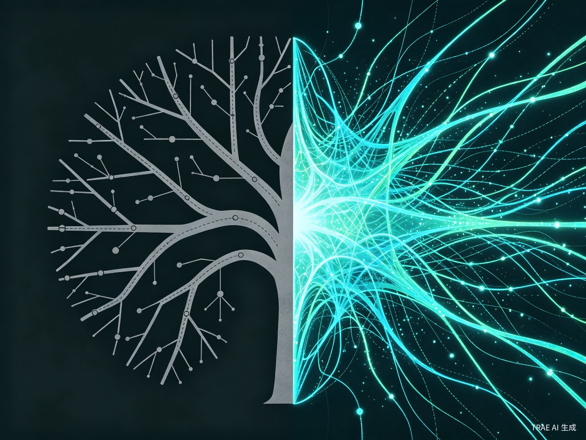

创意概述
无限流小说全网阅读量百亿级，但读者永远是旁观者。我们想做的，是让你从"翻页的人"变成"在规则里求生的人"。
想解决什么问题
无限流小说全网阅读量百亿级，但读者永远是旁观者——看别人在规则里挣扎求生，自己只能翻页。没有人把"你被丢进一个规则世界，自己想办法活下来"这件事做成真正可玩的体验。
为什么会想到做这个
我自己是无限流小说重度读者，每次看到主角发现规则漏洞、绝地翻盘的时候都会想：如果是我，我能活几轮？
但市面上只有文字冒险游戏——分支是写死的，结局是固定的，你只是在选ABCD，不是真的在思考。我想做的是：规则本身就是AI实时生成的，你面对的是真正未知的副本，每次开局都不一样，永远没法靠攻略通关。
大概是什么产品
一个基于AI的无限流互动叙事Web应用，玩家进入AI生成的"副本"，与NPC对话、观察环境、做决策，在规则中求生。
"传统互动叙事是树状分支，本产品是生成式未知——每一次体验都是独一无二的。这是从'阅读无限流'到'活在无限流'的范式转换。"
—— 核心理念目标用户及痛点
面向哪些用户
无限流 / 生存类小说读者
渴望从"旁观者"变为"参与者"，亲身体验规则博弈的快感
剧本杀玩家
喜欢推理和角色扮演，但受限于组局难、成本高、时间久
互动叙事爱好者
追求有深度、有沉浸感的故事体验，厌倦线性叙事
推理与策略挑战者
享受动脑破解规则、在高压下做决策的成就感
在什么场景下使用
- 碎片时间刺激：通勤、午休时想快速体验一把"被丢进规则世界"的紧张感
- 社交挑战：跟朋友比谁活得更久，分享各自的通关策略
- 独处冒险：无聊时来一把永远猜不到结局的沉浸式冒险
当前痛点
| 现有产品 | 核心痛点 | 规则之上的解法 |
|---|---|---|
| 文字冒险游戏 | 分支固定，二刷就没意思 | AI实时生成，每次开局都不一样 |
| 剧本杀 | 需要组局、贵、耗时长 | 随时开局，单人即可体验 |
| 无限流小说 | 只能看不能参与 | 你就是主角，每一个决策都影响生死 |
| 传统RPG | 规则已知，可以查攻略通关 | 规则未知且动态变化，无攻略可抄 |
价值与意义
商业价值
无限流是网文顶级IP类型，粉丝基数庞大且付费意愿强。产品天然适合短视频传播——"我活到了第三轮，你呢？"一句话就能引发挑战欲。
商业模式
- 免费体验：单次基础副本免费，降低尝鲜门槛
- 付费副本：高难度 / 多人协作副本付费解锁
- 后续延伸：IP联动、UGC副本创作生态、赛季通行证
创新性
目前市场上没有"AI实时生成规则 + 实时判定"的无限流互动产品。传统互动叙事是"树状分支"，本产品是"生成式未知"——每一次体验都是独一无二的。

这是从"阅读无限流"到"活在无限流"的范式转换。你不是在选作者写好的选项，你是在一个由AI实时构建的规则宇宙中，靠自己的观察和判断活下去。
产品核心流程
flowchart LR
A[进入副本] --> B[AI生成
规则与环境]
B --> C[玩家观察
与NPC对话]
C --> D[做出决策]
D --> E[AI实时判定
结果与后果]
E --> F{存活?}
F -->|是| G[进入下一轮
规则演化]
F -->|否| H[结算成绩
分享挑战]
G --> C
结语
无限流的魅力从来不只是"看主角多厉害"，而是"如果是我，我能不能活下来"。
规则之上要做的，就是把这份"如果"变成"现在"。不是翻页，不是选ABCD，而是真正站在规则面前——观察、思考、决策、承担后果。
每一次开局都是未知，每一轮规则都在演化，没有人能靠攻略通关。这才是无限流该有的样子。
"在规则之上，你不是读者。你就是那个在副本里挣扎求生的人。"